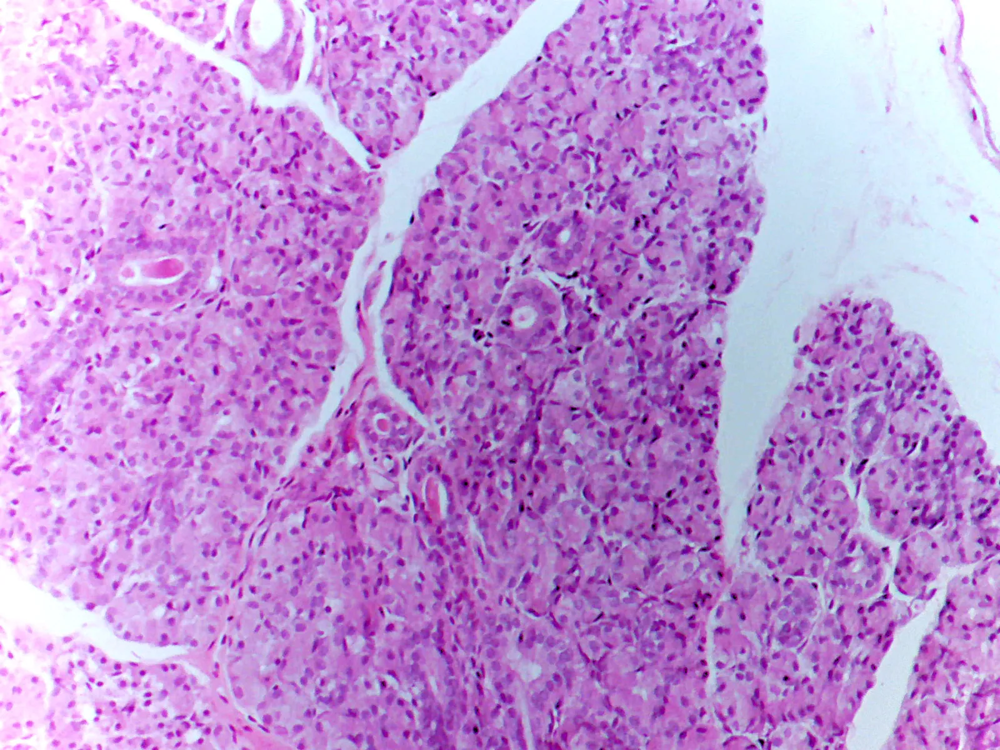
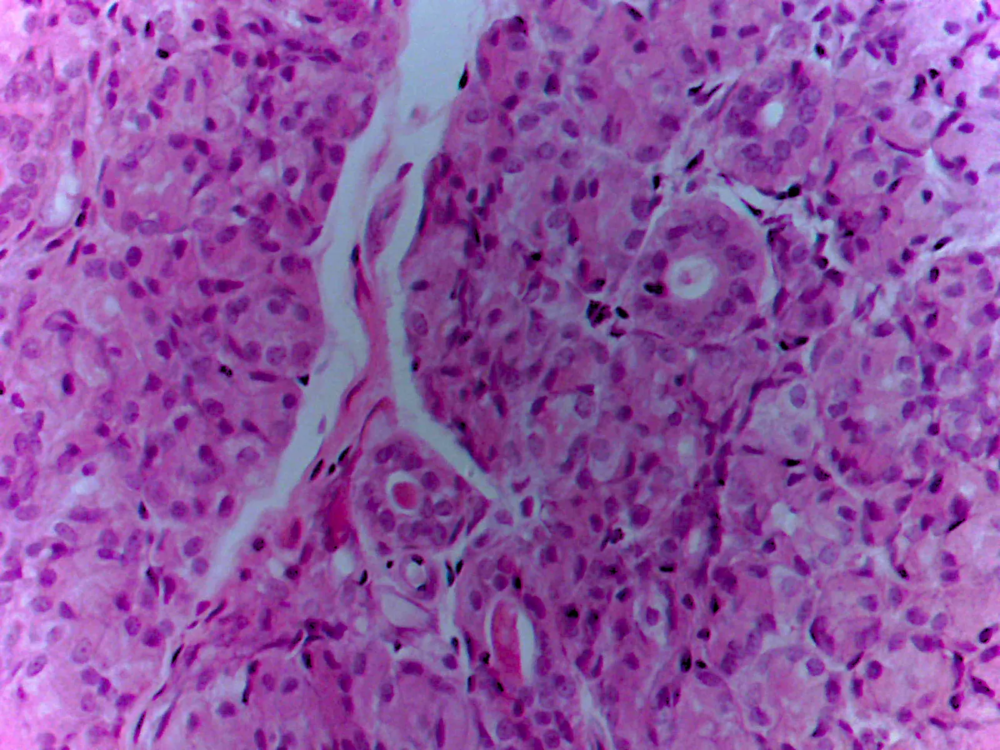
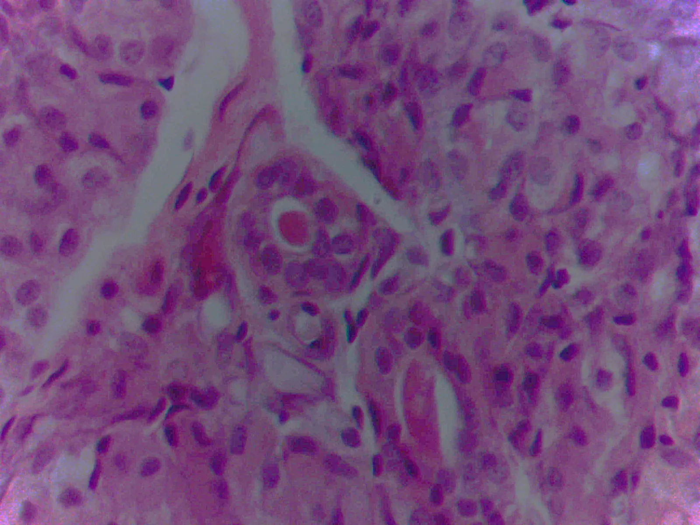

Lâmina 37 · Sistema digestório
Glândula parótida



Toque na imagem para ampliar. No computador, use as setas do teclado para trocar de imagem.
Lâmina 37 · Sistema digestório



Toque na imagem para ampliar. No computador, use as setas do teclado para trocar de imagem.